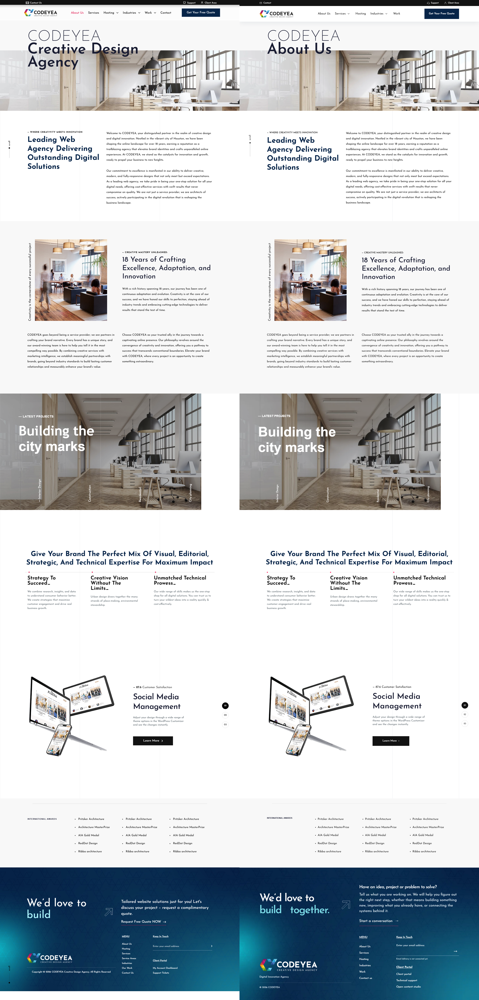

The seven reference sections use the original copy and imagery. CODEYEA / About Us is the requested hero title. The approved shared header, footer and page texture remain unchanged. Project and showcase controls are static presentations; motion and responsive refinement are deferred.
The supplied JPG has a damaged lower portion, so the complete live WordPress page was captured at the same 1440 × 1000 viewport. Each real footer was captured at the page end and stitched below the body because Chromium omits fixed reveal footers from ordinary full-page captures. The private preview status banner is excluded from comparison images only.
TypeScript, production build, 38 integration tests and 6 focused browser tests passed. Owner desktop visual approval is still required.